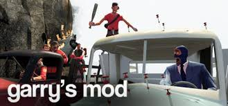

CS GO крутий онлайн шутер в якому ти можеш вибрати сторону грати за спецназ і захищати територію від бомби, або за терористів і приділити спецназ. Гра вийшла в 2012. Ти можеш вибрати будь-яку зброю на свій смак або влаштувати всіх ножем як ніндзя. Найпопулярніші зброї в кс- АК-47, М4А4, M4A4-s, AWP, або якесь інше. Є дуже багато режимів такі як: Звичайний режим там де ти закладаєш бомбу за терористів або не даєш цьому статися за спецназ, бій на смерть-вбивай якнайбільше гравців і заробляй топи, незрівнянно-там менше гравців ніж на звичайному але вони поселення це були найпопулярніші режими.

Minecraft - це інді-гра у жанрі пісочниці з елементами виживання та відкритим світом. За стилем світ гри повністю складається з блоків (ландшафт, предмети, моби, гравець), і для текстурування використовуються текстури з низькою роздільною здатністю (16×16 текселів). Гра розроблена шведським програмістом Маркусом Перссоном, відомим також як "Notch". Гра написана на Java за допомогою бібліотеки LWJGL.
Red Dead Redemption 2 – це друга частина пригодницького екшену від третьої особи Red Dead Redemption, події якої розгортаються на Дикому Заході. На гравців чекає неймовірно опрацьований величезний і живий світ, в якому NPC живуть своїм життям і реагують на всі дії гравця.Наприклад, випадкова сутичка з якимись людьми може перерости у справжню вендетту, якщо гравці вбили відомого персонажа. Гра біла видана 2019 року, компанія Rockstar Games відала цю гру на PlayStation, Xbox й Windows.
Garry’s Mod Від імені творця - Гаррі Ньюмана - комп'ютерна гра, фізична «пісочниця», яка дозволяє гравцеві маніпулювати об'єктами та експериментувати з фізикою, реалізм якої забезпечується двигуном Source. Ця модифікація створювалася для демонстрації великих можливостей движка Source, який обмежує свободу гравців лише їхньою власною фантазією та уявою.
